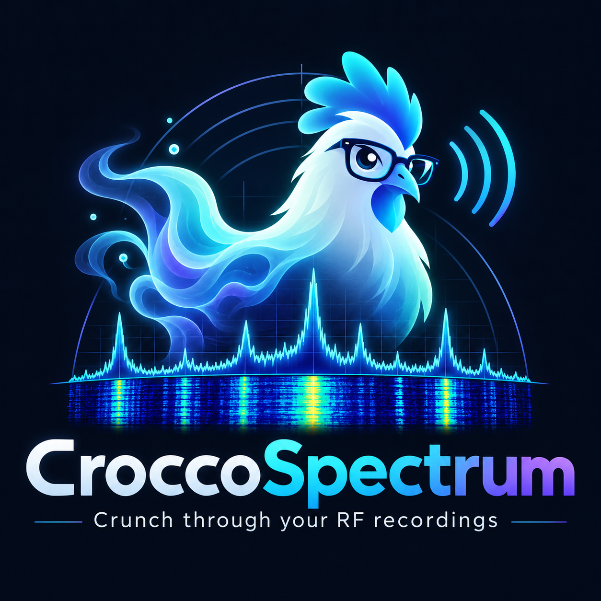
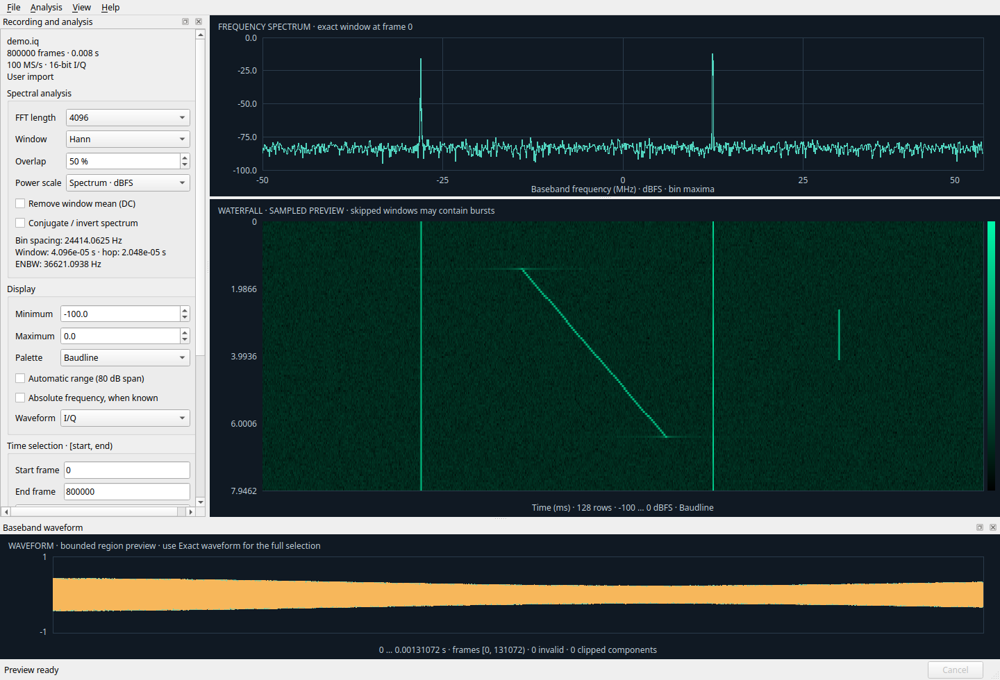

See what’s in the recording.
Zoom through spectrum, waterfall, and waveform views. Linked navigation and cursor readouts keep you oriented.
Frequency. Time. Amplitude.OFFLINE RF ANALYSIS · LINUX
Turn your RF recordings into a clearer picture. Explore spectrum, waterfall, and waveform views in one focused desktop workspace.
Free & open source · Linux x86_64 · No RF hardware required

A CLOSER LOOK
Follow a signal through frequency and time.
Keep the views connected, and the detail in reach.

BUILT FOR THE ANALYSIS
Zoom through spectrum, waterfall, and waveform views. Linked navigation and cursor readouts keep you oriented.
Frequency. Time. Amplitude.Read recordings in bounded blocks. Calculate exact interval averages, max hold, and full-scan waterfall overviews in the background.
Keep the detail. Keep control.Save sessions and bookmarks. Export CSV, plot images, or original samples. Use headless tools for command-line analysis.
Your data, ready for the next step.READY WHEN YOU ARE
Download the stable release and open your first recording.
One file. Make it executable, then launch.
Application libraries included.
Extract the folder and launch AppRun.
A ready-to-run alternative to AppImage.
For Linux x86_64 with glibc 2.39 or later (Ubuntu 24.04+ baseline). X11 or Wayland. System requirements
Try the newest features from devel and help test the next release. Development builds may contain unfinished changes.
Make your AppImage executable in your file manager, or extract the portable archive and run AppRun.
Choose File → Open recording. Review the sample format, byte order, I/Q order, and sample rate.
Explore the linked plots, select an interval, and run an exact analysis of the part that matters.